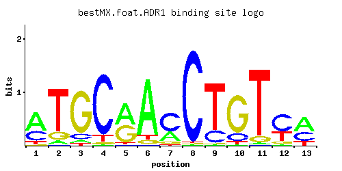

ADR1
YDR216W
Carbon source-responsive zinc-finger transcription factor, required for transcription of the glucose-repressed gene ADH2, of peroxisomal protein genes, and of genes required for ethanol, glycerol, and fatty acid utilization
Best-performing DNA-binding model.

View and copy the recommended matrices ↘
A | 0.58 0.06 0.05 0.01 0.52 0.86 0.30 0.01 0.01 0.02 0.02 0.03 0.51 C | 0.31 0.01 0.11 0.88 0.01 0.01 0.59 0.97 0.21 0.16 0.01 0.57 0.34 G | 0.02 0.15 0.80 0.03 0.43 0.07 0.10 0.01 0.01 0.77 0.08 0.09 0.01 T | 0.10 0.78 0.04 0.09 0.04 0.07 0.02 0.01 0.78 0.06 0.89 0.30 0.15
A | 57 6 5 1 52 86 30 1 1 2 2 3 51 C | 31 1 11 88 1 1 59 97 21 16 1 56 34 G | 2 15 80 3 43 7 10 1 1 77 8 9 1 T | 10 78 4 9 4 7 2 1 78 6 89 30 15
A | 0.59 -1.67 -1.86 -3.47 0.49 0.99 -0.06 -3.47 -3.47 -2.77 -2.77 -2.37 0.47 C | 0.54 -2.89 -0.49 1.59 -2.89 -2.89 1.19 1.68 0.15 -0.12 -2.89 1.15 0.64 G | -2.20 -0.18 1.49 -1.79 0.87 -0.94 -0.59 -2.89 -2.89 1.45 -0.81 -0.69 -2.89 T | -1.16 0.89 -2.08 -1.27 -2.08 -1.52 -2.77 -3.47 0.89 -1.67 1.02 -0.06 -0.76
Alternative candidate matrices 6
Historical matrix candidates from the original ScerTF database. Expand a source to inspect its original logo, scores, and matrix values.
ADR1Badis et. al.P = 0.02823View matrix ↘
ADR1_AFoat et. al.P = 1View matrix ↘
ADR1_BFoat et. al.P = 0.04009View matrix ↘
ADR1Harbison et. al.P = 0.04369View matrix ↘
ADR1Macisaac et. alP = 0.04369View matrix ↘
ADR1Pachkov et alP = 0.09011View matrix ↘
Gene-level annotations and interactions.
Genes bound in ChIP-chip experiments 146 genes
YAL022C, YAR009C, YBL025W, YBR109C, YBR110W, YBR163W, YBR223C, YBR226C, YBR227C, YBR228W, YBR236C, YBR237W, YBR256C, YBR257W, YBR298C, YBR299W, YCL051W, YCL052C, YCL055W, YCL056C, YCR054C, YCR095C, YDL017W, YDL018C, YDL027C, YDL054C, YDL073W, YDL074C, YDL089W, YDL090C, YDL117W, YDL119C, YDL122W, YDL159W, YDL160C, YDL176W, YDL177C, YDL179W, YDL240W, YDR045C, YDR159W, YDR164C, YDR165W, YDR183W, YDR236C, YDR237W, YDR279W, YDR289C, YDR318W, YEL004W, YEL005C, YEL061C, YER057C, YER058W, YER099C, YER100W, YER133W, YFL012W, YFL013C, YFR007W, YFR023W, YFR044C, YFR045W, YGL083W, YGL084C, YGL133W, YGL139W, YGL140C, YGL204C, YGL258W, YGR098C, YGR099W, YGR191W, YGR223C, YGR224W, YHR008C, YHR044C, YHR045W, YHR056C, YHR101C, YHR102W, YIL003W, YIL004C, YIL016W, YIL146C, YJL023C, YJL146W, YJL147C, YJL155C, YJL205C-A, YJR004C, YJR005W, YJR088C, YJR089W, YJR154W, YKL015W, YKL016C, YKL071W, YKL216W, YKR051W, YLL016W, YLL035W, YLL036C, YLL038C, YLR035C-A, YLR222C, YLR329W, YLR365W, YLR366W, YLR455W, YML001W, YML108W, YMR158W-A, YMR169C, YNL100W, YNL126W, YNL264C, YNR006W, YNR011C, YNR012W, YNR054C, YNR059W, YOL164W, YOR018W, YOR056C, YOR057W, YOR114W, YOR115C, YOR387C, YPL006W, YPL007C, YPL010W, YPL011C, YPL022W, YPL023C, YPL114W, YPL115C, YPL147W, YPL148C, YPL173W, YPL174C, YPL235W, YPL236C, YPL254W, YPR071W, YPR121W
Genes affected by TF deletion 30 genes
YJR048W, YOR377W, YPL016W, YBR129C, YDR099W, YDR530C, YOL107W, YCL012W, YCR050C, YAR003W, YLR439W, YOR043W, YER152C, YNR066C, YJR148W, YLR099C, YBR132C, YMR291W, YPL156C, YNL154C, YJL152W, YGR294W, YPL066W, YKL030W, YIL062C, YJL206C, YHR136C, YFR055W, YHR135C, YHR137W